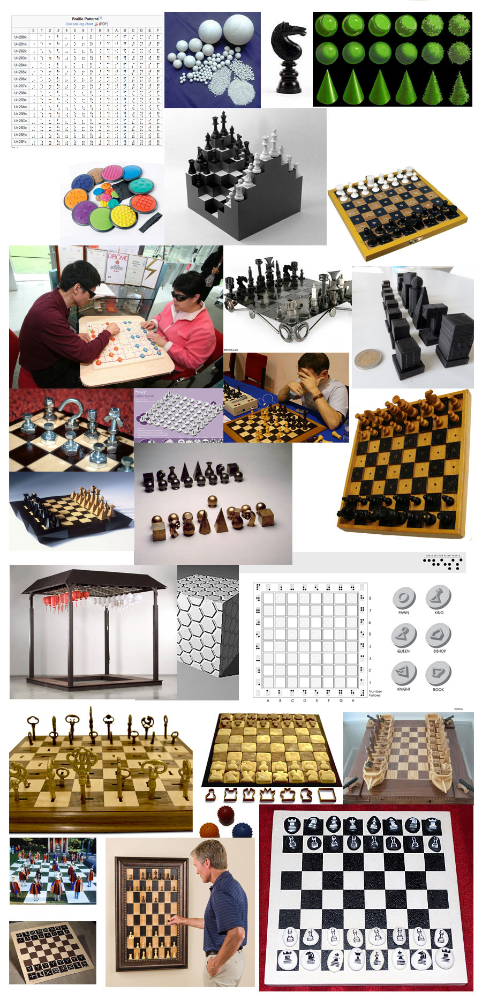
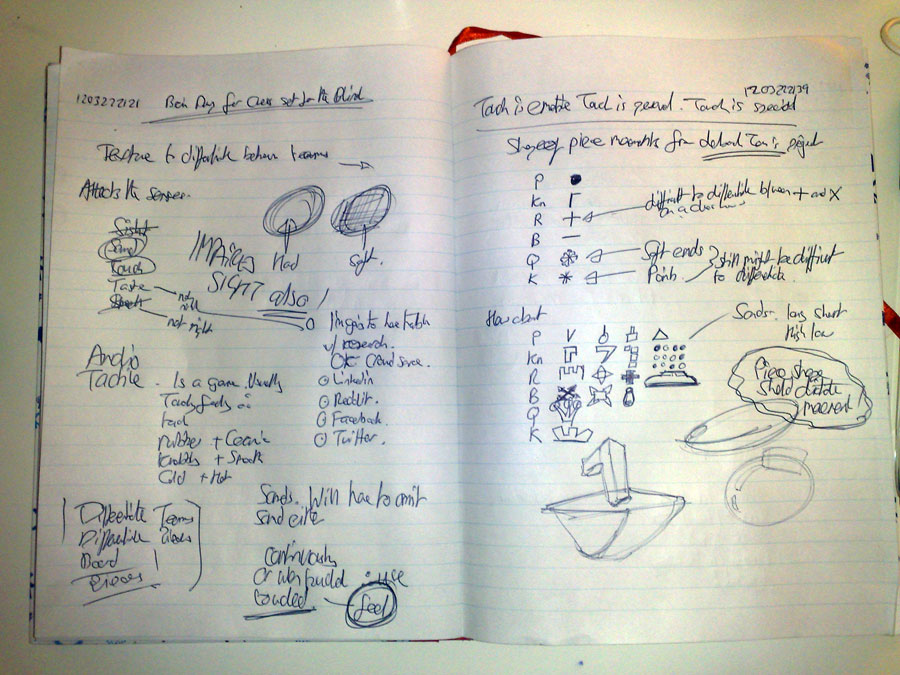
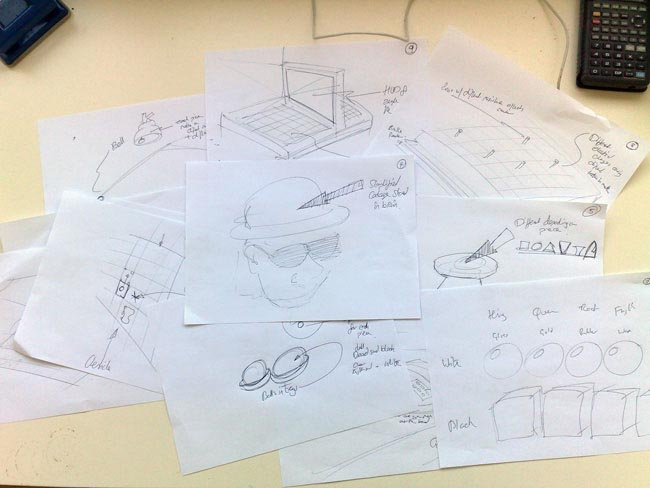
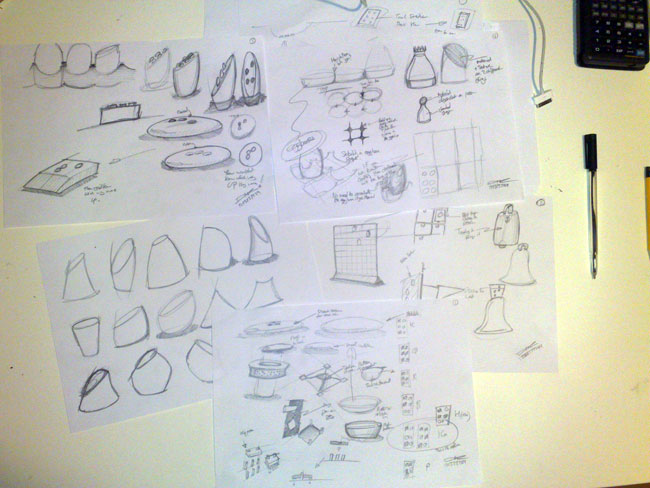

Chess Set for the Blind
AKA How to design a product in 10 days

Introduction
I thought it might be interesting for other people to see how I manage my workflow and how I design. I probably don’t design like anybody else, but I’m okay with that.
I decided that the best way to show this would be to run a design project live over a very short period of time so it could retain momentum. I would work on the project a bit every day over 10 days and post my process and results onto various social media platforms. It also meant that visitors could have a direct and immediate impact on the project as it happened.
It also meant that visitors could have a direct and immediate impact on the project as it happened.
The Brief
To design a chess set for the blind and visually impaired in 10 days.
The product must be viable, manufacturable, relevant to the user group, innovative. All the research, concept development, design detailing, and 3D modelling must be completed within these 10 days.
DAY ONE


Here’s a couple of things I have found out already: Deborah Tan has already designed a chess set for the blind. I was expecting somewhere that it had already been done. What I like about this is the shape of the piece dictates where it should move. I’m not too sure about that lack of differentiation between the sides. I’ll throw this into the melting pot of images that I am creating and we’ll see where it takes us.

I created an inspiration deck of found images to help my mind focus.
Also found a website and a PDF to read:
dinf.ne.jp/doc/english/Us_Eu/conf/z19/z19001/z1900117.html
DRAFT Tactile-Braille Accessibility Guidelines.pdf
Here's a very quick project plan so I can get an idea of when I should be panicking.

A couple of pages from my notebook.
Summary:
Here’s a quick summation of today’s work on this project.
It’s been done before. No surprises there.
My somewhat limited research favours designing with touch and tactility in mind. This appears to be the most appropriate sense to work with.
The board and the pieces do not necessarily have to confirm to traditional standards of shape. I like the idea of the piece shape suggesting the movement of the piece.
There’s a need to differentiate between the pieces as well as what side they are on.
Is there a need to accommodate spectators who can see into the design?
DAY TWO
I’ve been creating some quick sketches using a creative process called 10 in 20. It’s very quick and easy and is used to circumnavigate your inner critic and get raw ideas down on paper.
Creative Technique: 10-in-20
 
All you have to do is draw 10 concepts in 20 minutes. That’s 2 minutes a concept. So you have no time to worry about whether it’s a good idea or not. You just have to get it onto paper and move onto the next one. When you draw a blank for an idea, look round the room and draw the first thing you see, then try an turn that into a concept.
You can then evaluate these ideas straight away (e.g. good, bad, weird, fuzzy) or sketch a few concepts from the ideas to work them out a little better before evaluating them.
I’ll leave these to fester for a couple of hours to make my brain forget about them a little and then come back and have a look at them later on today and sketch some of them out a bit better and in more details. There’s no evaluation going on yet. The next couple of days is going to be nothing but generating ideas.

This is a rough plan for the design process I’m using. Since I’ve given myself a brief already, I can probably start the process from half way through. I’d love to do a solid amount of primary research because that is the part of the design process that throws up unique and innovative observations and insights.
There’s a couple of things that have come out of today’s research and sketching:
When sight is impaired, other senses take over. Touch and hearing are the senses most likely to be useful in this process compared with taste and smell.
Blind from birth will have a different experience that people who became blind after birth due to reference memories.
It doesn’t matter if people watching know what’s going on. The product will be there to facilitate the players, not the observers.
Summary: Less research and more sketching was done today. A lot of the sketches aren’t really worthy of the eyes of others because they are mainly me trying to get ideas down out of the ether and nailed onto paper. Then there’s been some sketching based on those nailed down ideas to see if any of them have legs to develop into concepts. A lot of this early sketching is feeling around trying to get an idea of what could be. It’s more like visual brainstorming that creating any concrete ideas. On DAY THREE, more sketching. And coming up with some sort of design statement that concepts can be evaluated against.
DAY THREE
I’ve taken everything I’ve managed to research and culled information from the notes I have made and created a statement of needs, a short list that I can design to. This statement represents what the product must have / be like to actually function as the product. It is written rather enigmatically so not to direct creativity down a particular path. That means, if I design to this statement I have fulfilled the requirements of the project:
Each individual piece must be recognised by touch
Each side must be identified by touch
It must be possible to play a complete game of chess
And so onward, ever onward, back to the drawing board. I like this part of design projects because they are so chaotic and exciting. There’s the fear that you’ll never create anything and you were stupid to even think that you could. But something always falls out the back of your head when you’re not looking that you can cultivate into a great idea.
The creativity technique I’ve used today is called fake-it-til-you-make-it. It’s very, very simple.
Creative Technique: Fake-til-you-make-it
Find samples of work already done. Copy it. Improve it. Use these ideas to create ideas of your own. Be inspired by pre-existing results and follow where these ideas take you.
Good if you’re in a rut.